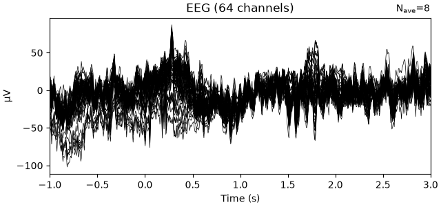

Note
Go to the end to download the full example code.
Read epoched BIDS data as MNE Epochs#
Some BIDS datasets contain recordings that were already segmented into
trials, marked with "RecordingType": "epoched" in their JSON sidecar.
mne_bids.read_raw_bids() refuses to load such recordings, because
representing them as continuous mne.io.Raw data would be wrong.
Instead, mne_bids.read_epochs_bids() reads them as
mne.Epochs, applying the same sidecar metadata
(channels.tsv, *_eeg.json, participants.tsv, …).
Since mne_bids.write_raw_bids() only writes continuous data, we will
first build a small epoched EEGLAB dataset ourselves, and then read it back.
# Authors: The MNE-BIDS developers
# SPDX-License-Identifier: BSD-3-Clause
We are importing everything we need for this example:
import json
import shutil
from pathlib import Path
import mne
import numpy as np
import pandas as pd
from mne.datasets import eegbci
from mne_bids import (
BIDSPath,
make_dataset_description,
print_dir_tree,
read_epochs_bids,
read_raw_bids,
)
Create an epoched BIDS dataset#
We use the EEG Motor Movement/Imagery Dataset and epoch one motor imagery run around the “imagine moving the left fist” and “imagine moving the right fist” cues.
edf_path = eegbci.load_data(subjects=1, runs=4, update_path=True)[0]
raw = mne.io.read_raw_edf(edf_path, preload=False)
eegbci.standardize(raw) # set channel names
raw.info["line_freq"] = 60
events, _ = mne.events_from_annotations(raw)
raw.set_annotations(None) # the EEGLAB exporter writes events, not annotations
event_id = {"left_fist": 2, "right_fist": 3}
# keep only the events we epoch on, so each exported epoch has exactly one event
events = events[np.isin(events[:, 2], list(event_id.values()))]
epochs = mne.Epochs(raw, events, event_id, tmin=-1, tmax=3, baseline=None, preload=True)
Using default location ~/mne_data for EEGBCI...
Extracting EDF parameters from /home/circleci/mne_data/MNE-eegbci-data/files/eegmmidb/1.0.0/S001/S001R04.edf...
Setting channel info structure...
Creating raw.info structure...
Used Annotations descriptions: [np.str_('T0'), np.str_('T1'), np.str_('T2')]
Not setting metadata
15 matching events found
No baseline correction applied
0 projection items activated
Loading data for 15 events and 641 original time points ...
0 bad epochs dropped
Now we store these epochs in a BIDS folder as an EEGLAB .set file,
together with the sidecar files. The important piece is
"RecordingType": "epoched" in the *_eeg.json sidecar, which is how
BIDS marks a recording as epoched.
mne_data_dir = Path(mne.get_config("MNE_DATASETS_EEGBCI_PATH"))
bids_root = mne_data_dir / "eegmmidb_bids_epochs_example"
if bids_root.exists():
shutil.rmtree(bids_root)
bids_path = BIDSPath(
subject="01",
task="imagery",
suffix="eeg",
extension=".set",
datatype="eeg",
root=bids_root,
).mkdir()
mne.export.export_epochs(bids_path.fpath, epochs, overwrite=True)
make_dataset_description(path=bids_root, name="EEGBCI epoched example")
sidecar = {
"TaskName": "imagery",
"SamplingFrequency": epochs.info["sfreq"],
"PowerLineFrequency": 60,
"EEGReference": "n/a",
"SoftwareFilters": "n/a",
"RecordingType": "epoched",
"EpochLength": len(epochs.times) / epochs.info["sfreq"],
}
bids_path.copy().update(extension=".json").fpath.write_text(
json.dumps(sidecar, indent=4), encoding="utf-8"
)
channels = pd.DataFrame({"name": epochs.ch_names, "type": "EEG", "units": "µV"})
channels.to_csv(
bids_path.copy().update(suffix="channels", extension=".tsv").fpath,
sep="\t",
index=False,
)
(bids_root / "participants.tsv").write_text(
"participant_id\nsub-01\n", encoding="utf-8"
)
print_dir_tree(bids_root)
Writing '/home/circleci/mne_data/eegmmidb_bids_epochs_example/dataset_description.json'...
|eegmmidb_bids_epochs_example/
|--- dataset_description.json
|--- participants.tsv
|--- sub-01/
|------ eeg/
|--------- sub-01_task-imagery_channels.tsv
|--------- sub-01_task-imagery_eeg.json
|--------- sub-01_task-imagery_eeg.set
Read the epoched data back#
mne_bids.read_raw_bids() detects the "epoched" recording type
and refuses to load the file:
try:
read_raw_bids(bids_path)
except RuntimeError as error:
print(error)
RecordingType is "epoched"; use mne_bids.read_epochs_bids() instead of read_raw_bids().
mne_bids.read_epochs_bids() is the right tool for this recording:
epochs_in = read_epochs_bids(bids_path)
epochs_in
Extracting parameters from /home/circleci/mne_data/eegmmidb_bids_epochs_example/sub-01/eeg/sub-01_task-imagery_eeg.set...
Not setting metadata
15 matching events found
No baseline correction applied
0 projection items activated
Ready.
Reading channel info from /home/circleci/mne_data/eegmmidb_bids_epochs_example/sub-01/eeg/sub-01_task-imagery_channels.tsv.
The event labels survived the round trip, so we can select conditions and average as usual:
epochs_in["left_fist"].average().plot()

<Figure size 640x300 with 1 Axes>
Note
Epoched recordings stored in continuous formats (.edf / .bdf /
.vhdr) are also supported: mne_bids.read_epochs_bids() slices
them into trials of length EpochLength (from the sidecar), using the
onsets in events.tsv when present.
Total running time of the script: (0 minutes 0.768 seconds)